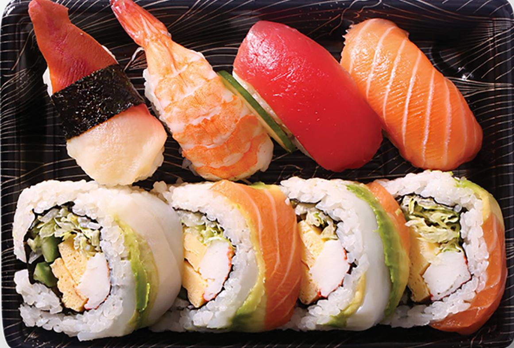
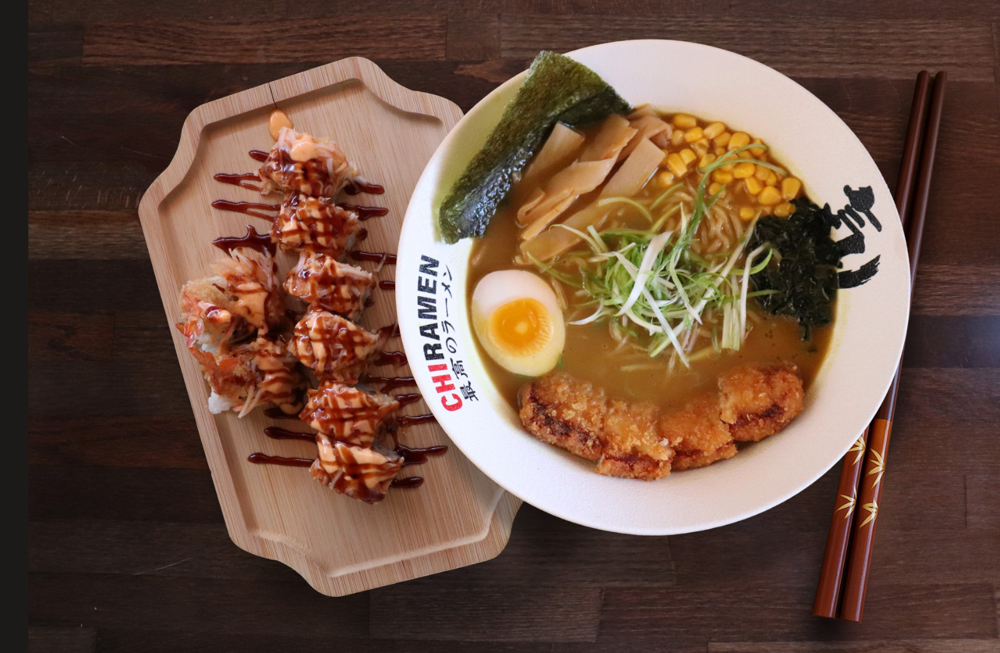

Fresh Ingredients
We use carefully selected ingredients to create fresh and enjoyable dishes.
Welcome to SAKURA
Enjoy fresh sushi,delicious ramen and traditional Japanese dishes in a warm and welcoming atmosphere.
OUR STORY
Sakura Japanese Resturant brings traditional Japanese flavours together with a modern and welcoming dining experience.
We use carefully selected ingredients to create fresh and enjoyable dishes.
Our chefs prepare each dish with attention to presentation and flavour.
Our goal is to provide every guest with a comfortable dining experience.
CUSTOMER FAVOURITES
Try some of our most popular Japanese dishes.

Fresh salmon sushi and salmon rolls.

Rich broth with noodles, vegetables and toppings.

Rice, vegetables and seasonal Japanese dishes.
Visit us